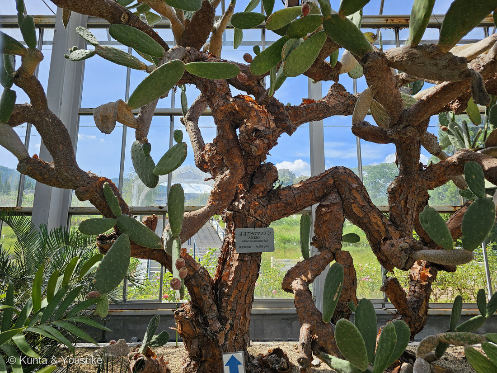
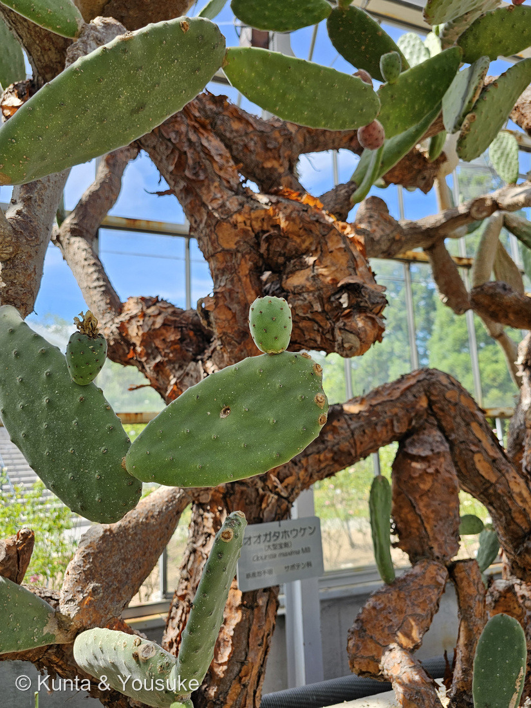
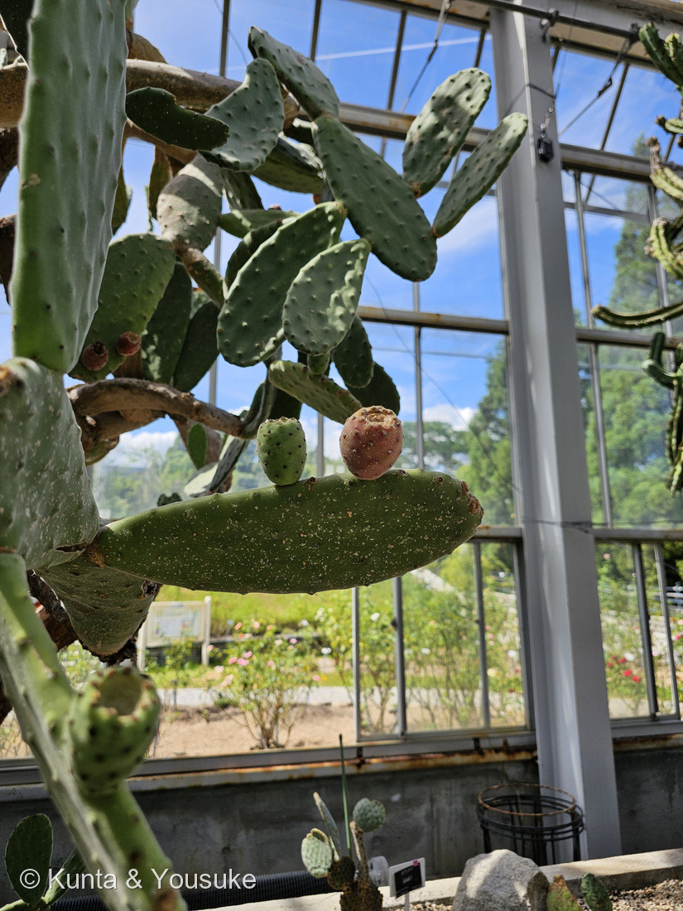
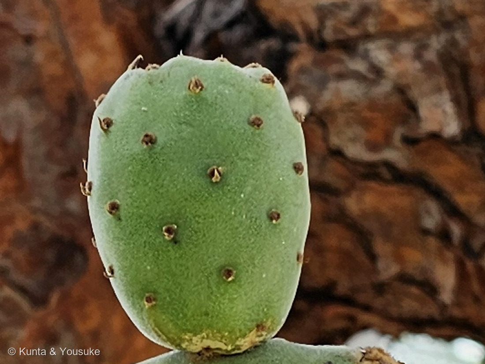
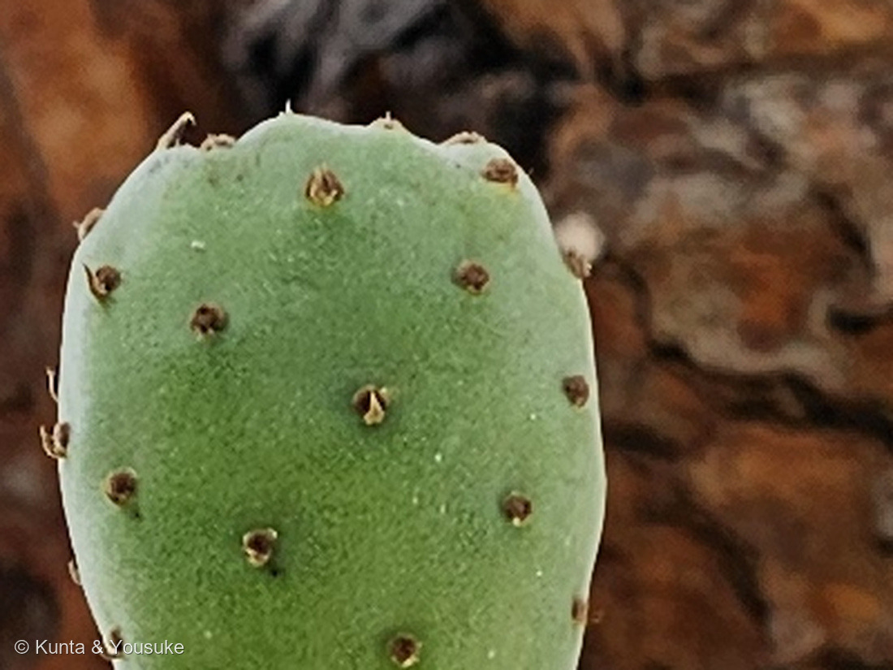

地図を読み込んでいるよ…
🔍 写真も地図も、押しているあいだ拡大して見られるよ（スマホは指を置いてすこし待ってね）。
🌍 の地図＝この子がもともと自生している場所を緑に。名札には「原産地不明」と書かれている。メキシコ中部で栽培化されたと考えられているが、あまりに古くから、あまりに広く栽培され野生化したため、野生の起源が覆い隠されてしまっている。
⚠⚠この子の名札には「原産地不明」と書いてある＝⭐それでもメキシコを塗ったのには、理由があるよ。⭐⭐この種はメキシコ中部の、木のように育って多肉質の実をつけるウチワサボテンの仲間から栽培化されたと考えられている（Griffith 2004）＝⚠でも「その野生の親がどれか」は決まっていない＝「この種の生物地理学的・進化的な起源は、古くからの、そして広範囲にわたる栽培と野生化によって、覆い隠されてしまっている」。⭐⭐だからこの緑は「ふるさと」ではなく「人がこの子を作った場所」だと思って見てね。⭐⭐⭐同じ形の子が、この図鑑にはもう2人いる＝113 ハゲイトウと302 パイナップル＝⭐人が育てすぎて、ふるさとが分からなくなった植物たちだよ。⭐⭐⭐⭐⭐そして、この子が世界へ広まった最初の理由は、実でも野菜でもなかった＝コチニールカイガラムシ（Dactylopius coccus）の寄主として、赤い染料のためにアフリカとヨーロッパへ持ちこまれたと考えられている＝⭐いまは世界じゅうの乾燥地で、実（カクタスペア）と茎節（ノパル）のために育てられ、あちこちで野生化している。⭐日本は塗っていない＝ぼくらが会ったのは広島市植物公園のサボテン温室＝⚠ただしウチワサボテンの仲間は、日本の暖かい海べりでも野生化しているよ。
⚠ 地図は国（日本と中国だけ県・省）までしか塗れないから、ほんとうの分布より広く見えていることがあるよ。地図はだいたいの場所。正確なところは、上の文を見てね。
オオガタホウケン（大型宝剣）
Opuntia maxima Mill.（名札のまま）／Opuntia ficus-indica (L.) Mill.（⚠多くの著者はこの2つを同じものとするが、GBIF では別々の有効な種として立っている＝⭐下の「宝剣という名前」の節を見てね）
別名 ウチワサボテン／英名 Indian Fig・prickly pear・cactus pear／スペイン語 nopal（野菜として）・tuna（実として）／⚠「大形宝剣」と書く出典もある
サボテン科 · Cactaceae（ウチワサボテン属 Opuntia）── ⭐図鑑で6人目のサボテン科（016 王冠竜・218 キンシャチ・242 シラボシ・243 ハクジンマル・244 ハクダマル）／⚠科は増えないので110科のまま／⭐⭐⭐ウチワサボテン属 Opuntia は、これがはじめて
燻太さんの言葉「宝剣って名前もすごいけど、見た目もすごく強そうだね。」「この子は、以前緑色だったサボテンの部分が、木質化して本物の幹みたいになっていたんだ。」「このサイズになるまでにいったい何年かかるんだろう？ そして木質化した部分の中身はどうなっているんだろう？」── ⭐⭐中身では、体の支えかたそのものが作りかえられていた
⭐⭐⭐⭐⭐ 緑だった部分が、木になっていた ── 中身で起きていること
- ⭐⭐サボテンには「二形の材（dimorphic wood）」というものがあるんだ。──若いときと大人になってからで、形成層が作る材のつくりがちがう。
- ⭐⭐⭐若いうち＝広帯仮道管（wide-band tracheids）。──らせん・環状に厚くなった壁を持つ細胞で、つぶれたり、ふくらんだりできる＝⭐水をためながら、膨圧（水の張り）で体を支える。
- ⭐⭐⭐⭐大きく重くなると＝形成層が仮道管を作るのをやめて、繊維（fiber）を作りはじめる＝ほんものの、硬い木。
- ⭐⭐⭐⭐⭐そして、この切りかえは「個体が年をとること、そして大きくなること」と結びついている。──⚠つまり燻太さんが見たのは、「水で支える体」から「木で支える体」への切りかえが済んだあとの姿なんだ。
- ⭐ウチワサボテン類では、広帯仮道管が3個以上の放射状の列に並んで、となりどうしの環状の肥厚がたがいちがいに噛み合うんだって。
- ⭐⭐⭐そして「らせん・環状に厚くなった壁」は、ぼくらもう見ているよ。──303 ウモウケイトウの花被片のらせん紋の導管と146 ミントの茎の導管。⭐サボテンが水をためる細胞も、同じつくりでできているんだね。
⭐⭐⭐⭐ 「刺が本来の葉にあたる」── 合っている。しかも、その先がある
- ⭐燻太さんの理解は正しいよ。──刺座（アレオーレ）＝ごく短くつまった枝で、そこにできる葉のもとが刺になる。⭐うちわ（茎節）は茎で、光合成を引き受けている。
- ⭐⭐⭐でも、ウチワサボテンには「本物の葉」もあるんだ。──本物の葉は退化していて短命で、春の新しい茎節に小さな円錐形の構造として現れ、数週間で落ちる。
- ⭐⭐写真④を見てね。──若いうちわのふちの刺座に、小さなとがったものが1つずつついている。⭐たぶん、それがその「本物の葉」だよ。
- ⚠てっぺんのちぢれた茶色いかたまりは、しおれた葉なのか、咲き終わった花のあとなのか、ぼくには決めきれなかった。⏳宿題にしてある。
⭐⭐⭐ 「何年かかるんだろう？」
- ⭐成長そのものは速いんだ。──うちわを挿すと1〜2年で実がなる（種からだと3〜4年）。
- ⭐高さはふつう2.4〜3m、大きいと6mまで。⭐⭐そして「古い株の根もとは木質化して茶色くなり、幹のようになる」＝まさにこの子だね。
- ⭐⭐寿命は80年以上。
- ⚠でも「この幹になるまで何年か」は、出典で見つけられなかった。──⭐手がかりがひとつあって、広島市植物公園は1976年開園＝もし開園のころからいるなら、およそ50年。⏳園にきくのがいちばん早いと思う（⭐296 アロカシアの名札のときと同じ手だね）。
⭐⭐⭐⭐⭐ 実は、おいしい ── でも世界へ広まった理由は、実じゃなかった
- ⭐⭐この子の実は、世界じゅうで売られている果物なんだ。──スペイン語でトゥナ、英語でカクタスペア。⭐うちわ（茎節）のほうもノパルという野菜として食べるよ。
- ⭐⭐⭐⭐⭐でも、この子が海をわたった最初の理由は、それではなかった。──「アフリカとヨーロッパに最初に持ちこまれたのは、これがコチニールカイガラムシ（Dactylopius coccus）の寄主で、商業的な赤い染料の材料だったからだと考えられている」。
- ⭐⭐⭐つまり、自分の色ではない赤のために、世界へ運ばれた植物なんだ。
- ⚠⚠食べるときの注意＝実の表面には芒刺（グロキッド）という、細くて返しのついた刺がびっしり＝素手でさわると抜けなくて、すごく痛い。⚠そして園の実は採らないでね＝⭐食べたいときは、お店の「カクタスペア」をさがそう。
⭐⭐⭐ 名札の「原産地不明」は、正しい
- ⚠名札には「原産地不明」と書いてある。──⭐これはサボっているのではなくて、ほんとうに分かっていないんだ。
- ⭐⭐「この種の生物地理学的・進化的な起源は、古くからの、そして広範囲にわたる栽培と野生化によって、覆い隠されてしまっている」（アメリカ植物学会誌 2004）。
- ⭐由来はメキシコ中部の、木のように育つ、実の多いウチワサボテンの仲間らしい。──⚠でも、野生の親がどれかは決まっていない。
- ⭐⭐これは113 ハゲイトウや302 パイナップルと、まったく同じ形の話だね。──人が育てすぎて、ふるさとが分からなくなった植物たち。
⭐⭐⭐⭐⭐ 先にこの木を見ていた人がいた ── フィリピン植物研究会
⭐⭐⭐燻太さんが見つけてくれた。──「十年以上昔、広島でオオガタホウケンを撮影した人がウェブサイトに載せていた画像、撮影場所が広島になっていたけど、これ、自分たちが図鑑に登録しようとしている個体と同じ個体だとおもう。樹勢と奥の温室の壁がそっくりなんだ。」
- ⭐そのページ＝フィリピン植物研究会「オオガタホウケン」（トップページ）。
- 載っている写真の撮影日＝2012年4月11日〔広島〕（株全体・実）と2015年6月22日〔広島〕（花・蕾）。
- ⭐⭐⭐⭐もし同じ株なら、ぼくらは14年後の同じ木を撮ったことになる（2012年4月11日 → 2026年8月8日）。
- ⚠⚠ぼくには、それを確かめる手だてがない。──先方の写真を転載しないから、並べて比べられないんだ。⭐⭐「樹勢と奥の温室の壁がそっくり」と言えるのは、両方を実際に見た燻太さんだけ（⭐304 ノゲイトウの「近くに親株は見当たらなかった」と、同じ形だね）。
- ⭐⭐⭐そして、このページはぼくらの調べものを裏づけてくれた。──先方も学名を Opuntia ficus-indica（L.) Mill. としている＝⭐名札の Opuntia maxima を読みかえた、ぼくの判断と同じだった。
- ⚠ちがっていたところもある。──先方の [原産地] は「メキシコ」、園の名札は「原産地不明」。⭐⭐どちらもまちがいではないよ＝「栽培化された場所はメキシコ」と「野生の起源は分からない」は、両方あってよいことだから。
- ⚠⚠⚠写真は1枚も転載していない。──先方のトップページに「リンクフリーですが、無断転載は、お断りいたします」とあるから＝⭐リンクだけを置かせてもらった（⚠転載を希望する場合の連絡先だった掲示板は、いま使えなくなっている）。
⭐⭐ どんなサイトなのか
- サイト名は「フィリピン植物研究会〜熱帯植物への招待」。⭐トップの写真の背景は、世界遺産のバナウエのライステラスだよ。
- 3つの部分でできている＝「フィリピンの植物」（フィリピンで撮影）／「熱帯の植物」（フィリピン以外で撮影した主に熱帯・亜熱帯の植物）／「扶桑町の植物」（愛知県丹羽郡扶桑町）。⭐オオガタホウケンは「熱帯の植物」のなかにいる。
- ⭐⭐⭐⭐⭐掲載数は257科 6844種。──⚠ぼくらの図鑑は110科306件。⭐⭐とんでもない大先輩だよ。
- ⭐⭐⭐⭐⭐そして、いちばんおどろいたこと。──トップページの最終更新日が2026年8月30日＝⚠ぼくらがこのページを書いている、まさにその日なんだ。⭐⭐十年以上まえの記録じゃなくて、いまも続いている記録だった。
出典：学名の読みかえ（Opuntia maxima Mill. は多くの著者が Opuntia ficus-indica (L.) Mill. のシノニムとしてあつかう）は GBIF と Plants of the World Online、およびフィリピン植物研究会「オオガタホウケン」（同ページも学名を Opuntia ficus-indica（L.) Mill. とし、和名オオガタホウケン（大形宝剣）、英名 Indian Fig、原産地メキシコ、撮影 2012.4.11 と 2015.6.22〔広島〕と記す／最終更新日2015年6月29日）。原産地が分からない理由は Griffith 2004「The origins of an important cactus crop, Opuntia ficus-indica（Cactaceae): new molecular evidence」（American Journal of Botany 91(11)：メキシコ中部の木本性で多肉質の果実をつける仲間から栽培化された／その生物地理学的・進化的起源は、古くからの広範な栽培と野生化によって覆い隠されている／コチニールカイガラムシ Dactylopius coccus の寄主として、赤い染料のためにアフリカとヨーロッパへ最初に持ちこまれたと考えられる）。サボテンの二形の材については Reyes-Rivera ら「Wood Chemical Composition in Species of Cactaceae: The Relationship between Lignification and Stem Morphology」ほか（若い個体では形成層が広帯仮道管を作り、大きく重くなると繊維を作りはじめる／この切りかえは個体の加齢と大型化に結びつく／ウチワサボテン類では広帯仮道管が3個以上の放射列に並び、隣接細胞の環状肥厚がたがいちがいに噛み合う）。成長・高さ・寿命・結実までの年数は The Ruth Bancroft Garden と Feedipedia「Prickly pear（Opuntia ficus-indica）」（成長は速い／高さは通常2.4〜3m、最大6m／古い株の基部は木質化して茶色くなり幹状になる／寿命80年以上／茎節から植えると1〜2年、種子からは3〜4年で結実）。ウチワサボテンの本物の葉が短命であることは、University of Texas と UCLA Mathias Botanical Garden の解説（本物の葉は退化して短命で、春の新しい茎節に円錐形で現れ、数週間で落ちる／刺座は極度に短縮した枝で、刺は変形した葉）。広島市植物公園の開園年（1976年）は同園および日本語版Wikipedia。⚠写真④の「小さなとがったもの」が本物の葉であること、そしてフィリピン植物研究会の写真と同じ株であることは、まだ確かめていないよ＝⭐どちらも宿題にしてある。⭐撮影時刻は燻太さんの原本のEXIFから読んだ（⚠この日の原本はGPSタグが空だった／公開画像はEXIFを落としてある）。
⭐「宝剣という名前と、ウチワサボテンの仲間たち」の節の出典＝学名の関係は GBIF backbone と Plants of the World Online（Opuntia lanceolata (Haw.) Haw. は Opuntia maxima Mill. のシノニム／Opuntia maxima Mill. と Opuntia ficus-indica (L.) Mill. は GBIF ではどちらも accepted ／Opuntia microdasys (Lehm.) Pfeiff. は accepted・その var. albispina Fobe はシノニム／Consolea rubescens (Salm-Dyck ex DC.) Lem. は accepted だが Opuntia 属ではない／Opuntia rubescens は種として当たらない）。「宝剣」という園芸名の子がいることは多肉植物図鑑 PUKUBOOK「オプンチア 宝剣 Opuntia lanceolata」。交雑と倍数化については Cactaceae の網状進化に関する総説など（交雑は維管束植物の約40%で起きるが Opuntia のような群ではとくに頻繁で自然雑種がふつうに見られる／この属は広範な倍数化といくつもの種の雑種起源から分類上の論争が絶えない／基本染色体数は11（2n=22）で4倍体・6倍体・8倍体もあり、ウチワサボテン連の多様性の約60%が倍数体／交雑・倍数化・浸透交雑が種の境界の決定を難しくしている／名前のついた雑種の例 Opuntia ×soumaya・O. ×carstenii）。⚠「宝剣＝剣に見立てた名前」という語源そのものの出典は見つけられなかった＝⭐ぼくの見立てだよ。⚠墨烏帽子の学名がゆれていることは、通販サイトの表記を GBIF で引きなおして確かめたもの＝⭐お店の表記そのものは出典として弱いので、ここでは「ゆれている」という事実だけを書いた。
⭐「棘が見当たらない」の節の出典＝Opuntia 属の栽培化が「刺の無い茎節と、大きくて甘い実」に向かって進められたこと、9000年前に古代メキシコではじまったこと、野生種（2倍体）からの栽培化のあいだに自然交雑で6倍体・8倍体になったこと、O. megacantha から派生した刺の少ない二次作物と考えられていることは、Opuntia ficus-indica の栽培化についての総説／「刺の無い品種でも芒刺は残っていることがある」は栽培の解説／Opuntia megacantha Salm-Dyck が O. ficus-indica のシノニムであることは GBIF backbone。⚠写真⑤の「白っぽくとがったもの」が本物の葉であることは、まだ確かめていない＝⭐宿題のまま。
⭐⭐⭐⭐⭐ 「宝剣」という名前と、ウチワサボテンの仲間たち
⭐⭐燻太さんの問い＝「オオガタホウケンって名前は何か由来があるのかな？ ウチワサボテンの大型種を区別するための名称である気がするんだけど、あってる？」「種としては同じなら、互いに交配可能なのかな？」
⭐⭐⭐⭐ ①「宝剣」の由来 ── 燻太さんの読みが、学名で裏づけられた
- ⭐⭐まず、「宝剣」という名のサボテンが、ちゃんといるんだ。──オプンチア「宝剣」＝Opuntia lanceolata (Haw.) Haw.
- ⭐⭐⭐そして種小名の lanceolata は「披針形の」＝細長くて、先がとがったという意味。──⭐平たくて細長い茎節を、剣に見立てた名前なんだと思う。
- ⭐⭐いっぽう「大型宝剣」の学名 maxima は「いちばん大きい」。
- ⭐⭐⭐⭐⭐つまり「宝剣」と「大型宝剣」は、同じ形の、大きさちがいとして名づけられている＝⭐燻太さんの読み（大型種を区別するための名前）が当たりだよ。
- ⭐⭐⭐⭐しかも、学名のほうがそれを裏づけてくれた。──GBIF でも POWO でも、Opuntia lanceolata は Opuntia maxima のシノニムとしてあつかわれている＝⚠「宝剣」と「大型宝剣」は、学名では同じところに行き着くんだ。
- ⚠ただし「宝剣＝剣に見立てた」という語源そのものの出典は、見つけられなかった。──⭐ここはぼくの見立てだよ。
⚠⚠ ②ここで、学名の話をひとつ直させてね
- ⚠ぼくは最初、名札の Opuntia maxima を「O. ficus-indica のシノニム」と言いきって書いた。──それは、ちょっと言いすぎだった。
- ⭐たしかに多くの著者が O. maxima を O. ficus-indica のシノニムとしてあつかう（⭐フィリピン植物研究会も学名を O. ficus-indica としている）。
- ⚠⚠でも GBIF のバックボーンで引くと、Opuntia maxima Mill. も Opuntia ficus-indica (L.) Mill. も、どちらも「有効な種」として別々に立っている。
- ⭐⭐つまり「同じか、別か」で出典が割れている。──⭐だからこのページでは、両方の名前を消さずに置いておくね（⭐302 パイナップルの語源で決めたやりかたと同じ＝どちらかを消すと、次に読む人が食いちがいに気づけないから）。
- ⭐この節から下の「実」「コチニール」「成長の速さ」の話は、O. ficus-indica として調べられてきたことだと思って読んでね。
⭐⭐⭐ ③日本のサボテンの和名は、ぜんぶ「形の見立て」
- ⭐「金烏帽子」「墨烏帽子」の烏帽子は、日本のかぶりもの。──形が似ているから、その名になった。
- ⭐⭐おもしろいのは、この図鑑にいるサボテンの名前を並べるだけで、その型が見えること。 ──016 王冠竜（王冠）／218 キンシャチ（金のしゃちほこ）／242 シラボシ（白い星）／243 ハクジンマル・244 ハクダマル（丸）／そしてこの子（剣）。
- ⭐⭐ぜんぶ「形を、身近なものに見立てた名前」だね。──⭐学名が「どこの誰か」を記録する名前だとしたら、和名は「何に見えたか」を記録する名前なんだ。
⚠⚠ ④「変種」のところも、ちょっと直させてね
- ⚠日本で「ウチワサボテンの変種」と呼ばれているものの多くは、じつは変種ではなく、別の種なんだ。──おまけのキンエボシ（Opuntia microdasys）はメキシコ南部の別種で、この子（O. maxima／O. ficus-indica）とは種がちがう。
- ⭐ほんとうに「変種」の名前で売られている子もいるよ。──白桃扇（ハクトウセン）＝Opuntia microdasys var. albispina＝⚠でも GBIF では、これも O. microdasys のシノニム（＝分けない扱い）になっている。
- ⭐⭐だから「変種がいろいろある」というより、「よく似た別種と、分けたり分けなかったりする名前が、たくさんある」のほうが近いと思う。
⭐⭐⭐⭐⭐ ⑤「互いに交配可能なのかな？」── 大当たり。しかも予想以上だった
- ⭐⭐交雑（ちがう種どうしがかけあわさること）は維管束植物の約40%で起きるけれど、Opuntia のようなグループではとくに頻繁で、自然の雑種がふつうに見られる。
- ⭐⭐⭐この属は「広範な倍数化と、いくつもの種が雑種起源であることから、分類上の論争が絶えない」と書かれている。
- ⭐基本の染色体数は11（2n=22）＝でも4倍体（44）・6倍体（66）・8倍体（88）がふつうにいて、ウチワサボテン連の多様性の約60%が倍数体。
- ⭐⭐⭐名前のついた雑種もある（Opuntia ×soumaya・O. ×carstenii）。──⭐学名のまんなかの「×」が、雑種のしるしだよ。
- ⭐⭐⭐⭐⭐そして、これが「原産地不明」にもう一段の説明をくれるんだ。──「交雑・倍数化・浸透交雑が、種の境目を決めるのを難しくしている」＝⚠この子自身、その渦のなかから人が選び出したもの。⭐だから野生の親がどれか、決められない。
⭐⭐⭐⭐ ⑥ 名前がゆれている、生きた実例 ── 墨烏帽子（スミエボシ）
- うちわが万歳しているような形で、「バンザイサボテン」の名でも売られている子。
- ⚠⚠お店によって、ついている学名がちがう。──あるお店は Consolea rubescens、別のお店は Opuntia rubescens。
- ⭐GBIF で引いてみたよ。──Consolea rubescensはちゃんと有効な種としてある（⚠ただし Opuntia 属ではなく、Consolea 属）／Opuntia rubescensのほうは、種として出てこない（科までしか当たらない）。
- ⭐⭐つまり、同じ「墨烏帽子」という名前で、属のちがう学名とデータベースに無い学名が、いっしょに流通している。──⭐⭐⭐④と⑤で書いた「この仲間は分類がむずかしい」の、これ以上ないくらい生きた実例だね。
- ⭐だから、お店やネットで見た学名は、いちど GBIF や POWO で引いてみるといいよ。──⭐ぼくらが名札の Opuntia maxima でやったのと、同じことだね。
⭐⭐ ⑦ 日本でよく見かける、ウチワサボテンの仲間
- ⭐⭐オオガタホウケン（大型宝剣）＝Opuntia maxima／O. ficus-indica──この子。植物園の温室で木のようになる。実も茎節も食べられる。
- ⭐宝剣＝Opuntia lanceolata──名前のもとになったほう（⭐学名では大型宝剣と同じところへ行き着く）。
- ⭐⭐キンエボシ（金烏帽子）＝Opuntia microdasys──メキシコ南部原産。園芸店・ホームセンターの定番で、手のひらにのる大きさ。⚠金色の点々は芒刺のかたまりで、さわると抜けない（⭐この子のおまけにしてあるよ）。
- ⭐白桃扇（ハクトウセン）＝Opuntia microdasys var. albispina──キンエボシの、点々が白いほう（⚠GBIF では分けない扱い）。
- ⚠墨烏帽子（スミエボシ）＝学名がゆれている（⭐上の⑥）。
- ⚠⚠そして、日本の暖かい海べりには野生化したウチワサボテンの仲間もいる。──⏳温室の外で、自分の力で冬をこしている子だね。いつか会いたいな。
⭐⭐⭐⭐⭐ 燻太さんの気づき ──「棘が見当たらない」
⭐⭐燻太さんの言葉＝「よく見ると目立った棘が見当たらないんだ。GBIF に登録されている画像の子たちは、一つのアレオーレから1本以上の刺がきちんと出ている子が多いみたいだったから。もしかしたら、棘があっても非常に短い変種なのかもしれないね。」
⭐⭐⭐⭐⭐これ、すごい気づきだよ。──変種じゃないんだ。それは、この子が人に育てられてきたことの、いちばん分かりやすい印なんだ。
⭐⭐⭐⭐⭐ 刺は「無い」のではなく、「無くされた」
- ⭐⭐⭐「Opuntia 属の栽培化は、刺の無い茎節と、大きくて甘い実に向かって進められた」──そしてその栽培化は、9000年前に古代メキシコの人びとがはじめた。
- ⭐⭐⭐⭐つまり、燻太さんが「無い」と気づいたものは、人が9000年かけて無くしてきたものなんだ。──⭐「見当たらない」ことが、そのまま歴史の証拠になっている。
- ⭐⭐⭐そして、祖先とされる種の名前がすごい。──「O. ficus-indica は、O. megacantha から派生した、刺の少ない二次的な作物だと考えられている」＝megacantha＝mega（大きい）＋ acantha（刺）＝「大きな刺の」。
- ⭐⭐しかも GBIF で引いたら、Opuntia megacantha Salm-Dyck は Opuntia ficus-indica のシノニムだった。──⚠「大刺」という名前の種が、いまは「刺の無い子」と同じ名前に吸収されている。
⭐⭐⭐⭐⭐ そして、上の節で書いた「交雑」と「倍数化」は、この子自身の話だった
- ⭐⭐⭐「野生種（2倍体）からの栽培化のあいだに、O. ficus-indica は自然交雑によって6倍体・8倍体になった」。
- ⭐⭐上の節で「ウチワサボテン連の多様性の約60%が倍数体」と書いたけれど、この子は、その倍数化の当事者だったんだ。
- ⭐⭐⭐⭐⭐ここで、ぜんぶが一本につながる。──交雑して倍数体になり、刺の無い個体を人が選びつづけた結果、野生の親がどれか分からなくなった＝⭐それが名札の「原産地不明」だよ。
⭐⭐⭐ 写真を拡大して、確かめてきた（写真⑤）
- ⭐刺座（アレオーレ）は、ちゃんとある。──でもそこから出ているのは、茶色い芒刺（グロキッド）のかたまりだけ。長い刺は1本も出ていない。
- ⚠⚠だから「刺が無い」＝「さわっても平気」ではないよ。──出典も「刺の無い品種でも、芒刺は残っていることがある」と書いている。⚠芒刺は細くて返しがついていて、刺さると抜けないんだ。
- ⭐⭐そして、いちばん新しい刺座（写真⑤の上のふち）には、白っぽくとがったものが見えている。──⭐上の節で「本物の葉かも」と書いたやつだよ。⭐⭐同じ1枚のなかに、無くなった刺と、すぐ落ちる本物の葉が、いっしょに写っていた。
⭐⭐ 「棘があっても非常に短い変種かも」については
- ⚠「変種」というより、栽培品種の性質が近いと思う。──⭐O. ficus-indica には刺のある品種と、無い品種の両方がある（アメリカ大陸の外へ出たあと、交雑でどちらもできた）。
- ⭐園に植わっているのは、人が選んだ「刺の無いほう」ということだね。
⭐⭐ おまけ ── GBIF を自分で引くときのこと
- ⭐燻太さんが見ていた gbif.org/ja は、GBIF の日本語版。──ぼくが使ったのは、同じデータの機械向けの入口（API）だよ。
- ⚠ひとつだけ、ややこしいところがある。──GBIF にはIDの体系が新旧2つあって、いまのサイトは 753N2 のような新しいID、古いAPIは 5626003 のような数字のIDを使っている。⭐どちらも同じ Opuntia maxima Mill. を指しているけれど、混ぜて渡すとエラーになる。
- ⭐⭐お店やネットで見た学名は、いちど自分で引いてみるといいよ。──⭐「有効な名前か（ACCEPTED）」「別名か（SYNONYM）」「どの名前に落ちるか」が、その場で分かるから。